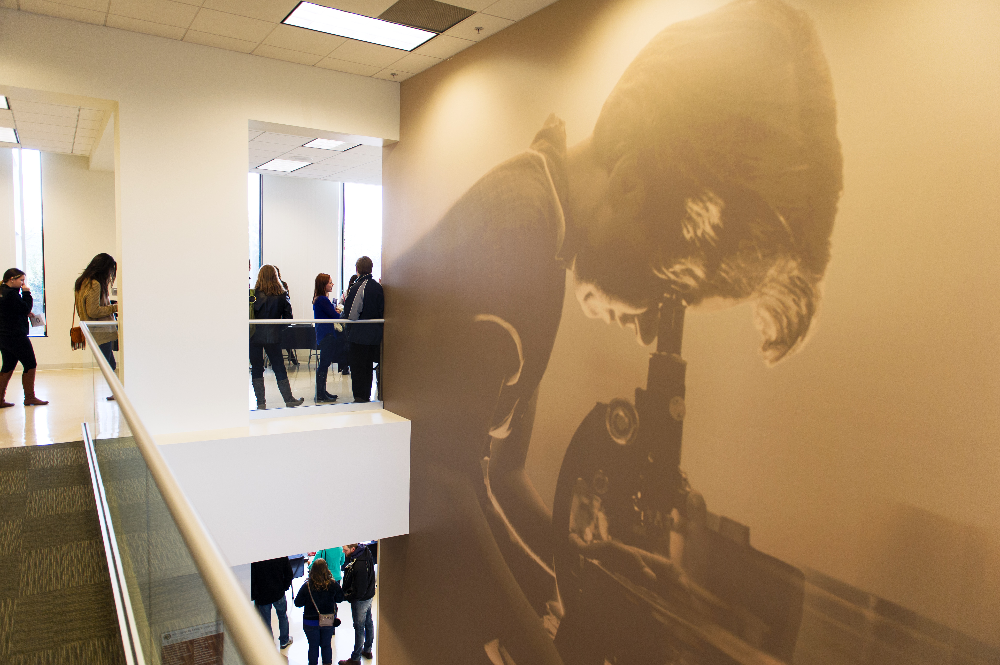

Predict IVF Outcomes With Confidence
AI-powered insights designed for fertility specialists.

Supporting Clinical Decisions
Early identification of RIF and RPL risk factors.

Advanced Immunological Modeling
Th17, Treg, cytokines, and clinical indicators combined.
Research-Backed Accuracy
Developed with clinical expertise and collaboration.
Empowering Fertility Care
Your data transformed into meaningful predictions.